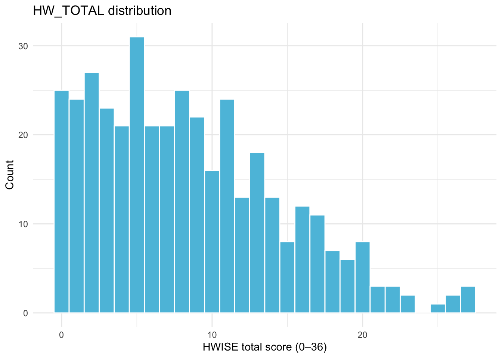
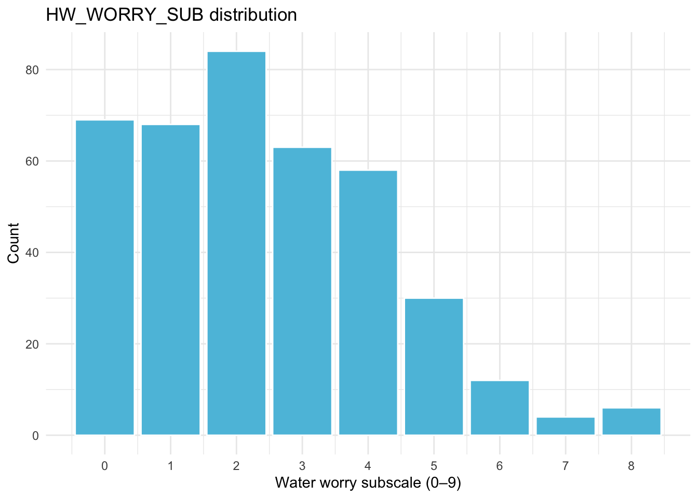
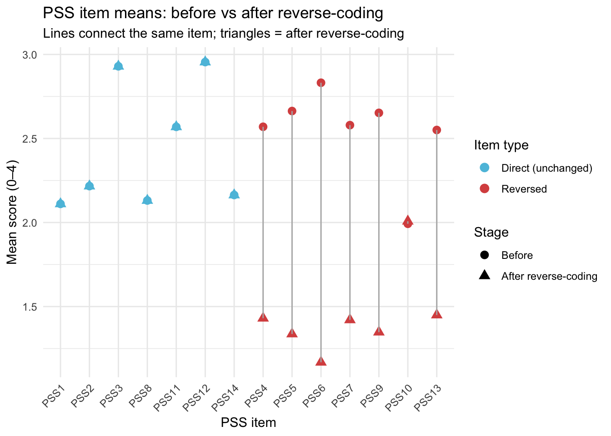
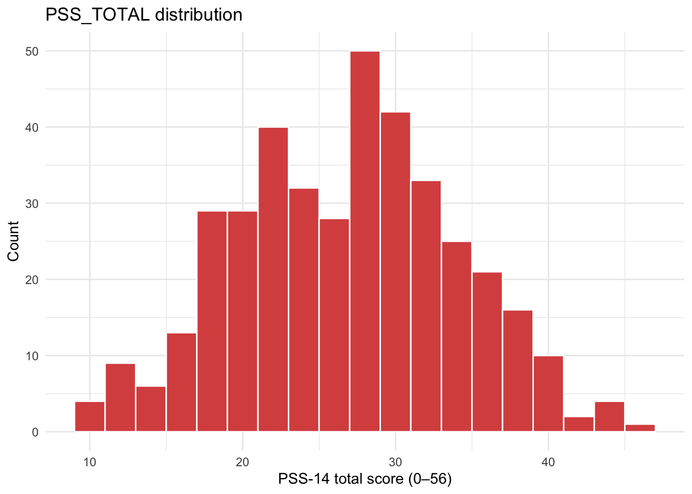
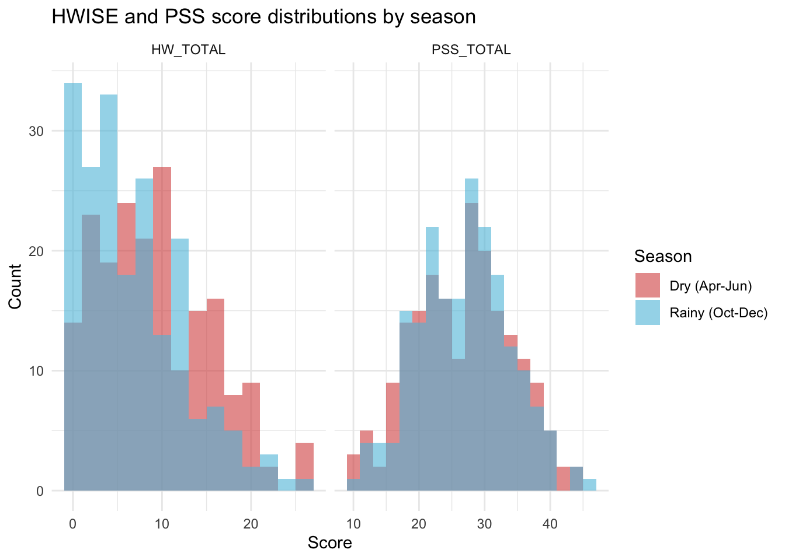
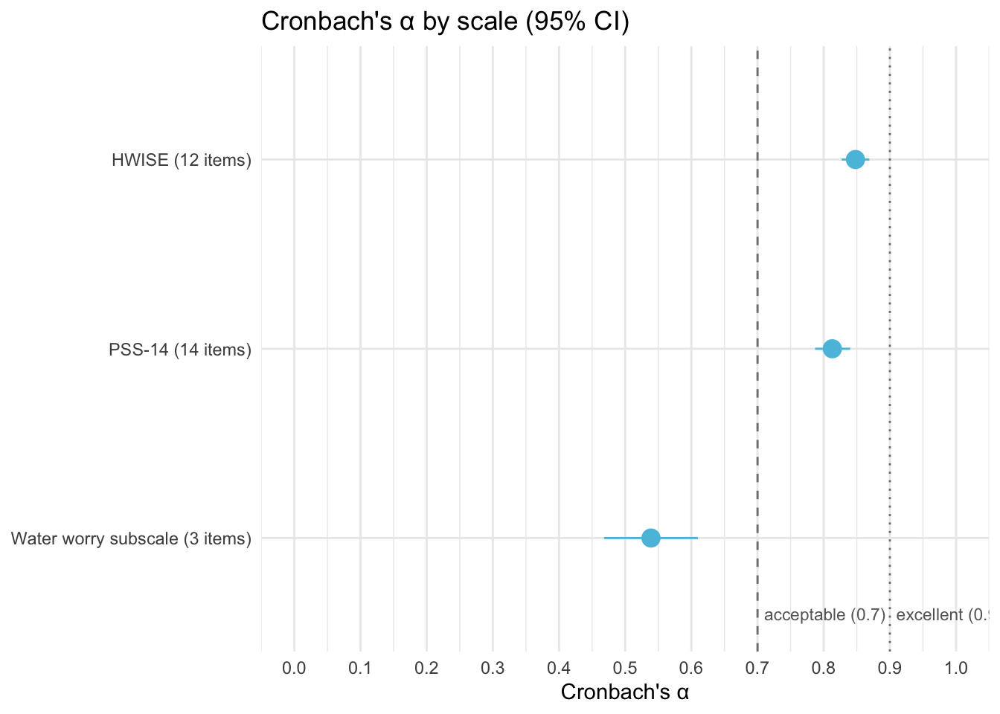

Last updated: 2026-03-07
Checks: 6 1
Knit directory: QUAIL-Mex/
This reproducible R Markdown analysis was created with workflowr (version 1.7.1). The Checks tab describes the reproducibility checks that were applied when the results were created. The Past versions tab lists the development history.
The R Markdown is untracked by Git. To know which version of the R
Markdown file created these results, you’ll want to first commit it to
the Git repo. If you’re still working on the analysis, you can ignore
this warning. When you’re finished, you can run
wflow_publish to commit the R Markdown file and build the
HTML.
Great job! The global environment was empty. Objects defined in the global environment can affect the analysis in your R Markdown file in unknown ways. For reproduciblity it’s best to always run the code in an empty environment.
The command set.seed(20241009) was run prior to running
the code in the R Markdown file. Setting a seed ensures that any results
that rely on randomness, e.g. subsampling or permutations, are
reproducible.
Great job! Recording the operating system, R version, and package versions is critical for reproducibility.
Nice! There were no cached chunks for this analysis, so you can be confident that you successfully produced the results during this run.
Great job! Using relative paths to the files within your workflowr project makes it easier to run your code on other machines.
Great! You are using Git for version control. Tracking code development and connecting the code version to the results is critical for reproducibility.
The results in this page were generated with repository version 67040b7. See the Past versions tab to see a history of the changes made to the R Markdown and HTML files.
Note that you need to be careful to ensure that all relevant files for
the analysis have been committed to Git prior to generating the results
(you can use wflow_publish or
wflow_git_commit). workflowr only checks the R Markdown
file, but you know if there are other scripts or data files that it
depends on. Below is the status of the Git repository when the results
were generated:
Ignored files:
Ignored: .DS_Store
Ignored: .RData
Ignored: .Rhistory
Ignored: .Rproj.user/
Ignored: analysis/.DS_Store
Ignored: analysis/.RData
Ignored: analysis/.Rhistory
Ignored: analysis/Hrs_by_HWISE score.png
Ignored: analysis/stacked_barplot.png
Ignored: code/.DS_Store
Ignored: data/.DS_Store
Untracked files:
Untracked: 02. Descriptive_stats.Rmd
Untracked: 02.-Descriptive_stats.html
Untracked: analysis/Data_cleaning_HBA2025.Rmd
Untracked: analysis/Data_merge_HWISE_PSS.Rmd
Untracked: data/Merged_Screening_HWISE_PSS.csv
Untracked: data/Screening_clean.csv
Untracked: data/conflicts_to_review.csv
Untracked: data/~$.Metadata-25-Feb-20.docx
Untracked: figure/
Unstaged changes:
Modified: analysis/Data_cleaning.Rmd
Modified: data/00.Dictionary.csv
Modified: data/00.Metadata-25-Feb-20.docx
Modified: data/01.SCREENING.csv
Note that any generated files, e.g. HTML, png, CSS, etc., are not included in this status report because it is ok for generated content to have uncommitted changes.
There are no past versions. Publish this analysis with
wflow_publish() to start tracking its development.
This script merges the cleaned screening file
(Screening_clean.csv, produced by
Data_cleaning.Rmd) with the HWISE and PSS data
(02.HWISE_PSS.csv). It covers: item-level validation, score
computation, the left-join merge, and a final missingness check.
Missing data coding scheme (inherited from
Data_cleaning.Rmd):
Sentinel codes are preserved in the master file and converted to
NA only within analysis scripts.
Scale scoring rules:
HWISE (Household Water InSecurity Experiences):
12 items (HW_WORRY through HW_SHAME), each
scored 0–3. Total range 0–36.
PSS-14 (Perceived Stress Scale, 14-item): items scored 0–4. Negatively-worded items (PSS4, PSS5, PSS6, PSS7, PSS9, PSS10, PSS13) are reverse-coded (0→4, 1→3, 2→2, 3→1, 4→0) before summing. Total range 0–56.
library(dplyr)
library(tidyr)
library(stringr)
library(readr)
library(ggplot2)
data_path <- "./data"
MISSING_CODES <- c(999, 888, 777, 666, 555, 444, 333)
# HWISE items (12 substantive items, scored 0-3)
HWISE_ITEMS <- c("HW_WORRY", "HW_INTERR", "HW_CLOTHES", "HW_PLANS",
"HW_FOOD", "HW_HANDS", "HW_BODY", "HW_DRINK",
"HW_ANGRY", "HW_SLEEP", "HW_NONE", "HW_SHAME")
# PSS-14 items: positively-worded (direct) vs negatively-worded (reversed)
PSS_DIRECT <- paste0("PSS", c(1, 2, 3, 8, 11, 12, 14))
PSS_REVERSE <- paste0("PSS", c(4, 5, 6, 7, 9, 10, 13))
PSS_ITEMS <- c(PSS_DIRECT, PSS_REVERSE)screening <- read.csv(
file.path(data_path, "Screening_clean.csv"),
stringsAsFactors = FALSE,
na.strings = c("")
)
hwise_pss <- read.csv(
file.path(data_path, "02.HWISE_PSS.csv"),
stringsAsFactors = FALSE,
na.strings = c("")
)
cat("Screening rows/cols:", dim(screening), "\n")Screening rows/cols: 399 62 cat("HWISE_PSS rows/cols:", dim(hwise_pss), "\n")HWISE_PSS rows/cols: 398 33 cat("\nScreening IDs:", length(unique(screening$ID)), "\n")
Screening IDs: 399 cat("HWISE_PSS IDs:", length(unique(hwise_pss$ID)), "\n")HWISE_PSS IDs: 398 Before merging, identify IDs that exist in only one file.
ids_screen <- unique(screening$ID)
ids_hw <- unique(hwise_pss$ID)
only_screen <- setdiff(ids_screen, ids_hw)
only_hw <- setdiff(ids_hw, ids_screen)
both <- intersect(ids_screen, ids_hw)
cat("IDs in both files: ", length(both), "\n")IDs in both files: 397 cat("IDs only in screening: ", length(only_screen), "\n")IDs only in screening: 2 cat("IDs only in HWISE_PSS: ", length(only_hw), "\n")IDs only in HWISE_PSS: 1 if (length(only_screen) > 0) {
cat(" Screening-only IDs:", paste(only_screen, collapse = ", "), "\n")
} Screening-only IDs: 379, 427 if (length(only_hw) > 0) {
cat(" HWISE_PSS-only IDs:", paste(only_hw, collapse = ", "), "\n")
} HWISE_PSS-only IDs: 71 hwise_pss <- hwise_pss %>%
mutate(across(all_of(HWISE_ITEMS),
~ ., .names = "{.col}_RAW"))Expected values: 0, 1, 2, 3. Empty strings were already read as
NA. Any remaining non-numeric text is flagged as 555.
hwise_pss <- hwise_pss %>%
mutate(across(all_of(HWISE_ITEMS), ~ {
x <- str_trim(as.character(.))
x_num <- suppressWarnings(as.numeric(x))
case_when(
is.na(x) ~ NA_real_,
x %in% as.character(MISSING_CODES) ~ suppressWarnings(as.numeric(x)),
!is.na(x_num) & x_num %in% 0:3 ~ x_num,
!is.na(x_num) ~ 999, # out-of-range numeric
TRUE ~ 555 # non-numeric text
)
}))Rows where at least one HWISE item changed from its raw value (e.g., empty → NA, non-numeric → 555, out-of-range → 999).
hwise_raw_long <- hwise_pss %>%
select(ID, ends_with("_RAW")) %>%
rename_with(~ str_remove(., "_RAW"), ends_with("_RAW")) %>%
select(ID, all_of(HWISE_ITEMS)) %>%
pivot_longer(-ID, names_to = "item", values_to = "raw")
hwise_clean_long <- hwise_pss %>%
select(ID, all_of(HWISE_ITEMS)) %>%
pivot_longer(-ID, names_to = "item", values_to = "cleaned")
hwise_changelog <- left_join(hwise_raw_long, hwise_clean_long, by = c("ID", "item")) %>%
filter(as.character(raw) != as.character(cleaned) |
(is.na(raw) != is.na(cleaned))) %>%
mutate(change_type = case_when(
is.na(cleaned) ~ "empty → NA",
cleaned %in% MISSING_CODES ~ paste0("flagged as ", cleaned),
TRUE ~ paste0(raw, " → ", cleaned)
)) %>%
arrange(ID, item)
if (nrow(hwise_changelog) == 0) {
cat("No HWISE values changed during cleaning.\n")
} else {
cat(nrow(hwise_changelog), "HWISE value(s) changed:\n")
print(hwise_changelog, n = 30)
}No HWISE values changed during cleaning.cat("HWISE item value distributions:\n")HWISE item value distributions:hwise_pss %>%
select(all_of(HWISE_ITEMS)) %>%
mutate(across(everything(), as.character)) %>%
pivot_longer(everything(), names_to = "item", values_to = "value") %>%
count(item, value) %>%
filter(!is.na(value)) %>%
print(n = 30)# A tibble: 47 × 3
item value n
<chr> <chr> <int>
1 HW_ANGRY 0 128
2 HW_ANGRY 1 157
3 HW_ANGRY 2 80
4 HW_ANGRY 3 32
5 HW_BODY 0 218
6 HW_BODY 1 105
7 HW_BODY 2 59
8 HW_BODY 3 16
9 HW_CLOTHES 0 159
10 HW_CLOTHES 1 116
11 HW_CLOTHES 2 91
12 HW_CLOTHES 3 31
13 HW_DRINK 0 260
14 HW_DRINK 1 110
15 HW_DRINK 2 24
16 HW_DRINK 3 4
17 HW_FOOD 0 275
18 HW_FOOD 1 79
19 HW_FOOD 2 32
20 HW_FOOD 3 11
21 HW_HANDS 0 318
22 HW_HANDS 1 57
23 HW_HANDS 2 19
24 HW_HANDS 3 4
25 HW_INTERR 0 95
26 HW_INTERR 1 132
27 HW_INTERR 2 121
28 HW_INTERR 3 50
29 HW_NONE 0 209
30 HW_NONE 1 109
# ℹ 17 more rows# Flag out-of-range or unexpected values
hwise_flags <- hwise_pss %>%
select(ID, all_of(HWISE_ITEMS)) %>%
pivot_longer(-ID, names_to = "item", values_to = "value") %>%
filter(!is.na(value) & !(value %in% c(0:3))) %>%
mutate(flag = case_when(
value %in% MISSING_CODES ~ "sentinel",
TRUE ~ "unexpected"
))
cat("\nFlagged HWISE values:\n")
Flagged HWISE values:print(hwise_flags, n = 30)# A tibble: 0 × 4
# ℹ 4 variables: ID <int>, item <chr>, value <dbl>, flag <chr>Sum of 12 items. Set to NA if any item is
NA or a sentinel code.
hwise_pss <- hwise_pss %>%
rowwise() %>%
mutate(
HW_TOTAL = {
vals <- c_across(all_of(HWISE_ITEMS))
if (any(is.na(vals)) | any(vals %in% MISSING_CODES, na.rm = TRUE)) {
NA_real_
} else {
sum(vals)
}
}
) %>%
ungroup()
cat("HW_TOTAL distribution:\n")HW_TOTAL distribution:print(summary(hwise_pss$HW_TOTAL)) Min. 1st Qu. Median Mean 3rd Qu. Max. NA's
0.000 3.000 8.000 8.423 12.000 27.000 8 cat("Missing HW_TOTAL:", sum(is.na(hwise_pss$HW_TOTAL)), "\n")Missing HW_TOTAL: 8 hwise_pss %>% filter(is.na(HW_TOTAL)) %>% select(ID, all_of(HWISE_ITEMS), HW_INFO)# A tibble: 8 × 14
ID HW_WORRY HW_INTERR HW_CLOTHES HW_PLANS HW_FOOD HW_HANDS HW_BODY HW_DRINK
<int> <dbl> <dbl> <dbl> <dbl> <dbl> <dbl> <dbl> <dbl>
1 35 0 0 0 0 0 0 0 0
2 48 0 0 0 1 0 0 1 0
3 63 1 0 1 0 1 0 1 1
4 83 0 1 0 0 0 0 0 1
5 168 2 2 1 2 1 0 0 0
6 347 2 3 3 2 1 1 2 2
7 358 3 3 NA 2 0 0 0 0
8 364 0 2 2 0 NA 0 0 0
# ℹ 5 more variables: HW_ANGRY <dbl>, HW_SLEEP <dbl>, HW_NONE <dbl>,
# HW_SHAME <dbl>, HW_INFO <chr># Distribution plot
ggplot(hwise_pss %>% filter(!is.na(HW_TOTAL)),
aes(x = HW_TOTAL)) +
geom_histogram(binwidth = 1, fill = "#5bc0de", color = "white") +
labs(title = "HW_TOTAL distribution",
x = "HWISE total score (0–36)", y = "Count") +
theme_minimal()
The water worry subscale captures the psychosocial burden of household water insecurity. It is computed as the sum of three HWISE items that reflect emotional and social distress related to water access:
HW_WORRY — worried the household would not have enough
waterHW_ANGRY — felt angry because of the household’s water
situationHW_SHAME — felt shame because the household did not
have enough waterEach item is scored 0–3, giving a subscale range of 0–9, where higher scores indicate greater psychosocial distress related to water insecurity. This subscale was proposed by Jepson et al. (2021), who used it to examine associations between water insecurity and health outcomes in urban Mexico.
Jepson, W. E., Stoler, J., Baek, J., Morán Martínez, J., Uribe Salas, F. J., & Carrillo, G. (2021). Cross-sectional study to measure household water insecurity and its health outcomes in urban Mexico. BMJ Open, 11(3), e040825. https://doi.org/10.1136/bmjopen-2020-040825
WORRY_ITEMS <- c("HW_WORRY", "HW_ANGRY", "HW_SHAME")
hwise_pss <- hwise_pss %>%
rowwise() %>%
mutate(
HW_WORRY_SUB = {
vals <- c_across(all_of(WORRY_ITEMS))
if (any(is.na(vals)) | any(vals %in% MISSING_CODES, na.rm = TRUE)) {
NA_real_
} else {
sum(vals)
}
}
) %>%
ungroup()
cat("HW_WORRY_SUB distribution:\n")HW_WORRY_SUB distribution:print(summary(hwise_pss$HW_WORRY_SUB)) Min. 1st Qu. Median Mean 3rd Qu. Max. NA's
0.000 1.000 2.000 2.424 4.000 8.000 4 cat("Missing HW_WORRY_SUB:", sum(is.na(hwise_pss$HW_WORRY_SUB)), "\n")Missing HW_WORRY_SUB: 4 ggplot(hwise_pss %>% filter(!is.na(HW_WORRY_SUB)),
aes(x = HW_WORRY_SUB)) +
geom_bar(fill = "#5bc0de", color = "white") +
scale_x_continuous(breaks = 0:9) +
labs(title = "HW_WORRY_SUB distribution",
x = "Water worry subscale (0–9)", y = "Count") +
theme_minimal()
hwise_pss <- hwise_pss %>%
mutate(across(all_of(PSS_ITEMS),
~ ., .names = "{.col}_RAW"))Expected values: 0, 1, 2, 3, 4.
hwise_pss <- hwise_pss %>%
mutate(across(all_of(PSS_ITEMS), ~ {
x <- str_trim(as.character(.))
x_num <- suppressWarnings(as.numeric(x))
case_when(
is.na(x) ~ NA_real_,
x %in% as.character(MISSING_CODES) ~ suppressWarnings(as.numeric(x)),
!is.na(x_num) & x_num %in% 0:4 ~ x_num,
!is.na(x_num) ~ 999,
TRUE ~ 555
)
}))pss_raw_long <- hwise_pss %>%
select(ID, ends_with("_RAW")) %>%
rename_with(~ str_remove(., "_RAW"), ends_with("_RAW")) %>%
select(ID, all_of(PSS_ITEMS)) %>%
pivot_longer(-ID, names_to = "item", values_to = "raw")
pss_clean_long <- hwise_pss %>%
select(ID, all_of(PSS_ITEMS)) %>%
pivot_longer(-ID, names_to = "item", values_to = "cleaned")
pss_changelog <- left_join(pss_raw_long, pss_clean_long, by = c("ID", "item")) %>%
filter(as.character(raw) != as.character(cleaned) |
(is.na(raw) != is.na(cleaned))) %>%
mutate(change_type = case_when(
is.na(cleaned) ~ "empty → NA",
cleaned %in% MISSING_CODES ~ paste0("flagged as ", cleaned),
TRUE ~ paste0(raw, " → ", cleaned)
)) %>%
arrange(ID, item)
if (nrow(pss_changelog) == 0) {
cat("No PSS values changed during cleaning.\n")
} else {
cat(nrow(pss_changelog), "PSS value(s) changed:\n")
print(pss_changelog, n = 20)
}No PSS values changed during cleaning.cat("PSS item value distributions:\n")PSS item value distributions:hwise_pss %>%
select(all_of(PSS_ITEMS)) %>%
mutate(across(everything(), as.character)) %>%
pivot_longer(everything(), names_to = "item", values_to = "value") %>%
count(item, value) %>%
filter(!is.na(value)) %>%
print(n = 20)# A tibble: 70 × 3
item value n
<chr> <chr> <int>
1 PSS1 0 38
2 PSS1 1 57
3 PSS1 2 169
4 PSS1 3 89
5 PSS1 4 44
6 PSS10 0 30
7 PSS10 1 79
8 PSS10 2 180
9 PSS10 3 80
10 PSS10 4 28
11 PSS11 0 9
12 PSS11 1 49
13 PSS11 2 138
14 PSS11 3 109
15 PSS11 4 92
16 PSS12 0 2
17 PSS12 1 29
18 PSS12 2 90
19 PSS12 3 140
20 PSS12 4 136
# ℹ 50 more rows# Flag unexpected values
pss_flags <- hwise_pss %>%
select(ID, all_of(PSS_ITEMS)) %>%
pivot_longer(-ID, names_to = "item", values_to = "value") %>%
filter(!is.na(value) & !(value %in% c(0:4))) %>%
mutate(flag = case_when(
value %in% MISSING_CODES ~ "sentinel",
TRUE ~ "unexpected"
))
cat("\nFlagged PSS values:\n")
Flagged PSS values:print(pss_flags, n = 30)# A tibble: 0 × 4
# ℹ 4 variables: ID <int>, item <chr>, value <dbl>, flag <chr>PSS items 4, 5, 6, 7, 9, 10, 13 are negatively worded and must be reversed before summing (0→4, 1→3, 2→2, 3→1, 4→0). Sentinel codes are left unchanged.
reverse_pss <- function(x) {
case_when(
is.na(x) ~ NA_real_,
x %in% MISSING_CODES ~ x, # pass sentinel through unchanged
x == 0 ~ 4,
x == 1 ~ 3,
x == 2 ~ 2,
x == 3 ~ 1,
x == 4 ~ 0,
TRUE ~ x
)
}
hwise_pss <- hwise_pss %>%
mutate(across(all_of(PSS_REVERSE),
reverse_pss, .names = "{.col}_REV"))
# Renamed columns for scored total computation
PSS_SCORED_DIRECT <- PSS_DIRECT
PSS_SCORED_REVERSE <- paste0(PSS_REVERSE, "_REV")
PSS_SCORED_ITEMS <- c(PSS_SCORED_DIRECT, PSS_SCORED_REVERSE)Mean item score before and after reverse coding for the 7 reversed items. Direct items are shown for reference. If reverse-coding worked correctly, the reversed items’ means should shift (e.g., a mean of 2.8 becomes ~1.2).
# Mean of original values for all 14 items
pss_means_before <- hwise_pss %>%
select(all_of(PSS_ITEMS)) %>%
summarise(across(everything(), ~ mean(.[!. %in% MISSING_CODES], na.rm = TRUE))) %>%
pivot_longer(everything(), names_to = "item", values_to = "mean_before")
# Mean of scored values (direct items unchanged, reverse items = _REV columns)
pss_means_after <- bind_rows(
hwise_pss %>%
select(all_of(PSS_DIRECT)) %>%
summarise(across(everything(), ~ mean(.[!. %in% MISSING_CODES], na.rm = TRUE))) %>%
pivot_longer(everything(), names_to = "item", values_to = "mean_after"),
hwise_pss %>%
select(all_of(paste0(PSS_REVERSE, "_REV"))) %>%
rename_with(~ str_remove(., "_REV")) %>%
summarise(across(everything(), ~ mean(.[!. %in% MISSING_CODES], na.rm = TRUE))) %>%
pivot_longer(everything(), names_to = "item", values_to = "mean_after")
)
pss_rev_check <- left_join(pss_means_before, pss_means_after, by = "item") %>%
mutate(
direction = if_else(item %in% PSS_DIRECT, "Direct (unchanged)", "Reversed"),
item = factor(item, levels = c(PSS_DIRECT, PSS_REVERSE))
)
# Print table
cat("PSS item means before and after reverse-coding:\n")PSS item means before and after reverse-coding:print(pss_rev_check %>% arrange(item) %>%
mutate(across(c(mean_before, mean_after), ~ round(., 2))), n = 20)# A tibble: 14 × 4
item mean_before mean_after direction
<fct> <dbl> <dbl> <chr>
1 PSS1 2.11 2.11 Direct (unchanged)
2 PSS2 2.22 2.22 Direct (unchanged)
3 PSS3 2.93 2.93 Direct (unchanged)
4 PSS8 2.13 2.13 Direct (unchanged)
5 PSS11 2.57 2.57 Direct (unchanged)
6 PSS12 2.95 2.95 Direct (unchanged)
7 PSS14 2.16 2.16 Direct (unchanged)
8 PSS4 2.57 1.43 Reversed
9 PSS5 2.66 1.34 Reversed
10 PSS6 2.83 1.17 Reversed
11 PSS7 2.58 1.42 Reversed
12 PSS9 2.65 1.35 Reversed
13 PSS10 1.99 2.01 Reversed
14 PSS13 2.55 1.45 Reversed # Plot
pss_rev_check %>%
pivot_longer(c(mean_before, mean_after),
names_to = "stage", values_to = "mean") %>%
mutate(stage = factor(stage,
levels = c("mean_before", "mean_after"),
labels = c("Before", "After reverse-coding"))) %>%
ggplot(aes(x = item, y = mean, color = direction, shape = stage, group = item)) +
geom_point(size = 3) +
geom_line(aes(group = item), color = "grey70", linewidth = 0.5) +
scale_color_manual(values = c("Direct (unchanged)" = "#5bc0de",
"Reversed" = "#d9534f")) +
scale_shape_manual(values = c("Before" = 16, "After reverse-coding" = 17)) +
labs(title = "PSS item means: before vs after reverse-coding",
subtitle = "Lines connect the same item; triangles = after reverse-coding",
x = "PSS item", y = "Mean score (0–4)",
color = "Item type", shape = "Stage") +
theme_minimal() +
theme(axis.text.x = element_text(angle = 45, hjust = 1))
Sum of 7 direct items + 7 reverse-coded items. Set to NA
if any item is NA or a sentinel code. Participants with a
Revisar note in PSS_INFO are flagged for
manual review.
hwise_pss <- hwise_pss %>%
rowwise() %>%
mutate(
PSS_TOTAL = {
vals <- c_across(all_of(PSS_SCORED_ITEMS))
if (any(is.na(vals)) | any(vals %in% MISSING_CODES, na.rm = TRUE)) {
NA_real_
} else {
sum(vals)
}
}
) %>%
ungroup()
# Flag participants with a "Revisar" note in PSS_INFO
hwise_pss <- hwise_pss %>%
mutate(PSS_REVIEW_FLAG = if_else(
str_detect(tolower(PSS_INFO), "revisar"), 1L, 0L
))
cat("PSS_TOTAL distribution:\n")PSS_TOTAL distribution:print(summary(hwise_pss$PSS_TOTAL)) Min. 1st Qu. Median Mean 3rd Qu. Max. NA's
9.00 22.00 28.00 27.27 32.00 47.00 4 cat("Missing PSS_TOTAL:", sum(is.na(hwise_pss$PSS_TOTAL)), "\n")Missing PSS_TOTAL: 4 hwise_pss %>% filter(is.na(PSS_TOTAL)) %>% select(ID, all_of(PSS_ITEMS), PSS_INFO)# A tibble: 4 × 16
ID PSS1 PSS2 PSS3 PSS8 PSS11 PSS12 PSS14 PSS4 PSS5 PSS6 PSS7 PSS9
<int> <dbl> <dbl> <dbl> <dbl> <dbl> <dbl> <dbl> <dbl> <dbl> <dbl> <dbl> <dbl>
1 37 NA NA NA NA NA NA NA NA 0 0 NA NA
2 89 1 3 4 2 2 3 0 3 2 2 2 3
3 169 1 2 1 1 1 1 0 NA 3 3 3 3
4 496 2 2 2 2 2 3 1 NA 3 3 3 2
# ℹ 3 more variables: PSS10 <dbl>, PSS13 <dbl>, PSS_INFO <chr>cat("\nParticipants flagged for PSS review (PSS_REVIEW_FLAG = 1):\n")
Participants flagged for PSS review (PSS_REVIEW_FLAG = 1):hwise_pss %>%
filter(PSS_REVIEW_FLAG == 1) %>%
select(ID, all_of(PSS_ITEMS), PSS_INFO, PSS_TOTAL) %>%
print()# A tibble: 1 × 17
ID PSS1 PSS2 PSS3 PSS8 PSS11 PSS12 PSS14 PSS4 PSS5 PSS6 PSS7 PSS9
<int> <dbl> <dbl> <dbl> <dbl> <dbl> <dbl> <dbl> <dbl> <dbl> <dbl> <dbl> <dbl>
1 4 2 3 2 1 2 2 1 3 3 3 3 3
# ℹ 4 more variables: PSS10 <dbl>, PSS13 <dbl>, PSS_INFO <chr>, PSS_TOTAL <dbl># Distribution plot
ggplot(hwise_pss %>% filter(!is.na(PSS_TOTAL)),
aes(x = PSS_TOTAL)) +
geom_histogram(binwidth = 2, fill = "#d9534f", color = "white") +
labs(title = "PSS_TOTAL distribution",
x = "PSS-14 total score (0–56)", y = "Count") +
theme_minimal()
The HWISE_PSS file encodes season as text (“Oct-Dec”, “Apr-Jun”). Recode to match the numeric convention in the screening file (0 = rainy, 1 = dry).
hwise_pss <- hwise_pss %>%
mutate(SEASON_CLEAN = case_when(
str_detect(tolower(SEASON), "oct|rainy") ~ 0,
str_detect(tolower(SEASON), "apr|dry") ~ 1,
TRUE ~ NA_real_
))
cat("SEASON_CLEAN distribution:\n")SEASON_CLEAN distribution:print(table(hwise_pss$SEASON_CLEAN, useNA = "always"))
0 1 <NA>
203 195 0 Keep only the columns needed from the HWISE_PSS file (raw items,
scored totals, flags, and notes). The SEASON variable will
come from the screening file.
hwise_to_merge <- hwise_pss %>%
select(
ID,
W_WS_LOC,
SEASON_CLEAN, # numeric season (for cross-check)
# HWISE: raw items + computed total
all_of(HWISE_ITEMS),
HW_TOTAL,
HW_WORRY_SUB,
HW_INFO, # free-text notes
# PSS: raw items, reversed items, computed total, flags
all_of(PSS_ITEMS),
all_of(PSS_SCORED_REVERSE), # reversed versions of neg items
PSS_TOTAL,
PSS_REVIEW_FLAG,
PSS_INFO # free-text notes
)
cat("Columns in hwise_to_merge:", ncol(hwise_to_merge), "\n")Columns in hwise_to_merge: 42 Left join on screening to keep all screened
participants. HWISE/PSS columns will be NA for the handful
of participants without HWISE_PSS data.
df_merged <- screening %>%
left_join(hwise_to_merge, by = "ID")
cat("Merged dimensions:", dim(df_merged), "\n")Merged dimensions: 399 103 # Cross-check SEASON from screening (0/1) vs HWISE_PSS text-derived value
season_check <- df_merged %>%
filter(!is.na(SEASON) & !is.na(SEASON_CLEAN)) %>%
mutate(season_match = SEASON == SEASON_CLEAN)
cat("\nSEASON cross-check (screening vs HWISE_PSS):\n")
SEASON cross-check (screening vs HWISE_PSS):print(table(season_check$season_match, useNA = "always"))
TRUE <NA>
397 0 season_mismatch <- season_check %>% filter(!season_match)
if (nrow(season_mismatch) > 0) {
cat("\nSEASON mismatches (review these IDs):\n")
print(season_mismatch %>% select(ID, SEASON, SEASON_CLEAN))
}
# Remove the temporary SEASON_CLEAN after cross-check
df_merged <- df_merged %>% select(-SEASON_CLEAN)missing_hw <- df_merged %>%
filter(is.na(HW_TOTAL) & is.na(PSS_TOTAL)) %>%
select(ID, SEASON)
cat("Participants with no HWISE or PSS data after merge:\n")Participants with no HWISE or PSS data after merge:print(missing_hw) ID SEASON
1 379 1
2 427 1key_vars <- c("HW_TOTAL", "PSS_TOTAL", HWISE_ITEMS, PSS_ITEMS)
missing_report <- df_merged %>%
select(all_of(key_vars)) %>%
summarise(across(everything(), list(
n_na = ~ sum(is.na(.)),
n_sentinel = ~ sum(. %in% MISSING_CODES, na.rm = TRUE)
))) %>%
pivot_longer(everything(),
names_to = c("variable", ".value"),
names_sep = "_(?=n_na|n_sentinel)") %>%
mutate(
n_total = nrow(df_merged),
pct_na = round(n_na / n_total * 100, 1),
pct_flag = round(n_sentinel / n_total * 100, 1)
) %>%
filter(n_na > 0 | n_sentinel > 0) %>%
arrange(desc(pct_na))
# Collect up to 5 example IDs per variable that are NA
na_ids <- df_merged %>%
select(ID, all_of(key_vars)) %>%
pivot_longer(-ID, names_to = "variable", values_to = "value") %>%
filter(is.na(value)) %>%
group_by(variable) %>%
summarise(sample_IDs = paste(head(ID, 10), collapse = ", "), .groups = "drop")
missing_report <- missing_report %>%
left_join(na_ids, by = "variable")
cat("Missing data summary — HWISE & PSS variables:\n")Missing data summary — HWISE & PSS variables:print(missing_report, n = 40)# A tibble: 28 × 7
variable n_na n_sentinel n_total pct_na pct_flag sample_IDs
<chr> <int> <int> <int> <dbl> <dbl> <chr>
1 HW_TOTAL 10 0 399 2.5 0 35, 48, 63, 83, 168, 347…
2 PSS_TOTAL 6 0 399 1.5 0 37, 89, 169, 379, 427, 4…
3 HW_SHAME 5 0 399 1.3 0 63, 168, 347, 379, 427
4 PSS4 5 0 399 1.3 0 37, 169, 379, 427, 496
5 PSS13 4 0 399 1 0 37, 89, 379, 427
6 HW_CLOTHES 3 0 399 0.8 0 358, 379, 427
7 HW_FOOD 3 0 399 0.8 0 364, 379, 427
8 HW_ANGRY 3 0 399 0.8 0 48, 379, 427
9 HW_SLEEP 3 0 399 0.8 0 35, 379, 427
10 HW_NONE 3 0 399 0.8 0 83, 379, 427
11 PSS1 3 0 399 0.8 0 37, 379, 427
12 PSS2 3 0 399 0.8 0 37, 379, 427
13 PSS3 3 0 399 0.8 0 37, 379, 427
14 PSS8 3 0 399 0.8 0 37, 379, 427
15 PSS11 3 0 399 0.8 0 37, 379, 427
16 PSS12 3 0 399 0.8 0 37, 379, 427
17 PSS14 3 0 399 0.8 0 37, 379, 427
18 PSS7 3 0 399 0.8 0 37, 379, 427
19 PSS9 3 0 399 0.8 0 37, 379, 427
20 PSS10 3 0 399 0.8 0 37, 379, 427
21 HW_WORRY 2 0 399 0.5 0 379, 427
22 HW_INTERR 2 0 399 0.5 0 379, 427
23 HW_PLANS 2 0 399 0.5 0 379, 427
24 HW_HANDS 2 0 399 0.5 0 379, 427
25 HW_BODY 2 0 399 0.5 0 379, 427
26 HW_DRINK 2 0 399 0.5 0 379, 427
27 PSS5 2 0 399 0.5 0 379, 427
28 PSS6 2 0 399 0.5 0 379, 427 df_merged %>%
filter(!is.na(SEASON)) %>%
mutate(Season = if_else(SEASON == 0, "Rainy (Oct-Dec)", "Dry (Apr-Jun)")) %>%
select(Season, HW_TOTAL, PSS_TOTAL) %>%
pivot_longer(-Season, names_to = "Scale", values_to = "Score") %>%
filter(!is.na(Score)) %>%
ggplot(aes(x = Score, fill = Season)) +
geom_histogram(binwidth = 2, position = "identity", alpha = 0.6) +
facet_wrap(~ Scale, scales = "free_x") +
scale_fill_manual(values = c("Rainy (Oct-Dec)" = "#5bc0de",
"Dry (Apr-Jun)" = "#d9534f")) +
labs(title = "HWISE and PSS score distributions by season",
x = "Score", y = "Count") +
theme_minimal()
Cronbach’s α measures how well the items in a scale correlate with
each other — i.e., whether they are all capturing the same underlying
construct. Values ≥ 0.7 are generally considered acceptable. α is
computed here on complete cases only (rows with any NA or
sentinel code in the relevant items are excluded).
library(psych)
# Helper to clean a set of items: exclude NAs and sentinel codes row-wise
clean_items <- function(data, items) {
data %>%
select(all_of(items)) %>%
mutate(across(everything(), ~ if_else(. %in% MISSING_CODES, NA_real_,
as.numeric(.)))) %>%
filter(if_all(everything(), ~ !is.na(.)))
}
# HWISE — 12 items, scored 0–3
alpha_hwise <- clean_items(df_merged, HWISE_ITEMS) %>% alpha()
# PSS-14 — use reverse-coded versions of the negative items
alpha_pss <- clean_items(df_merged, PSS_SCORED_ITEMS) %>% alpha()
# Water worry subscale — 3 items
alpha_worry <- clean_items(df_merged, WORRY_ITEMS) %>% alpha()
# Summary table
alpha_summary <- tibble(
Scale = c("HWISE (12 items)", "PSS-14 (14 items)",
"Water worry subscale (3 items)"),
n_items = c(12, 14, 3),
n_complete = c(nrow(clean_items(df_merged, HWISE_ITEMS)),
nrow(clean_items(df_merged, PSS_SCORED_ITEMS)),
nrow(clean_items(df_merged, WORRY_ITEMS))),
alpha = round(c(alpha_hwise$total$raw_alpha,
alpha_pss$total$raw_alpha,
alpha_worry$total$raw_alpha), 3),
alpha_95CI_lower = round(c(alpha_hwise$total$raw_alpha -
1.96 * alpha_hwise$total$ase,
alpha_pss$total$raw_alpha -
1.96 * alpha_pss$total$ase,
alpha_worry$total$raw_alpha -
1.96 * alpha_worry$total$ase), 3),
alpha_95CI_upper = round(c(alpha_hwise$total$raw_alpha +
1.96 * alpha_hwise$total$ase,
alpha_pss$total$raw_alpha +
1.96 * alpha_pss$total$ase,
alpha_worry$total$raw_alpha +
1.96 * alpha_worry$total$ase), 3)
)
cat("Cronbach's α summary:\n")Cronbach's α summary:print(alpha_summary)# A tibble: 3 × 6
Scale n_items n_complete alpha alpha_95CI_lower alpha_95CI_upper
<chr> <dbl> <int> <dbl> <dbl> <dbl>
1 HWISE (12 items) 12 389 0.848 0.827 0.869
2 PSS-14 (14 items) 14 393 0.813 0.787 0.84
3 Water worry subsca… 3 393 0.539 0.468 0.61 ggplot(alpha_summary,
aes(x = reorder(Scale, alpha), y = alpha)) +
geom_pointrange(aes(ymin = alpha_95CI_lower, ymax = alpha_95CI_upper),
size = 0.8, color = "#5bc0de") +
geom_hline(yintercept = 0.7, linetype = "dashed", color = "grey50") +
geom_hline(yintercept = 0.9, linetype = "dotted", color = "grey50") +
annotate("text", x = 0.6, y = 0.71, label = "acceptable (0.7)",
hjust = 0, size = 3, color = "grey40") +
annotate("text", x = 0.6, y = 0.91, label = "excellent (0.9)",
hjust = 0, size = 3, color = "grey40") +
coord_flip() +
scale_y_continuous(limits = c(0, 1), breaks = seq(0, 1, 0.1)) +
labs(title = "Cronbach's α by scale (95% CI)",
x = NULL, y = "Cronbach's α") +
theme_minimal()
HWISE (α = 0.848, 95% CI: 0.827–0.869): Good
internal consistency, comfortably above the 0.8 threshold. All 12 items
contribute positively, with item-total correlations ranging from 0.36 to
0.66. The weakest items are HW_SLEEP (r.drop = 0.296) and
HW_DRINK (r.drop = 0.381), though neither is low enough to
warrant removal — they likely capture a slightly different facet of
water insecurity (disrupted sleep and drinking water access) that is
less correlated with the broader scale but still conceptually
relevant.
PSS-14 (α = 0.813, 95% CI: 0.787–0.840): Good
internal consistency. The weakest items are PSS12 (r.drop =
0.274) and PSS13_REV (r.drop = 0.292), both of which are
among the reverse-coded items. This pattern is common in PSS data and
has been noted in validation studies. The overall α is consistent with
values reported in the literature for Spanish-language administrations
of the PSS.
Water worry subscale (α = 0.539, 95% CI:
0.468–0.610): Below the conventional 0.7 threshold, which
warrants caution in interpretation. However, this is partly expected —
Cronbach’s α is sensitive to the number of items, and a 3-item scale
will almost always yield lower α than the full 12-item HWISE even if the
items are genuinely related. Among the three items,
HW_SHAME has the lowest item-total correlation (r.drop =
0.261), suggesting it is the least consistent with the other two.
HW_ANGRY and HW_WORRY are more closely related
to each other. These results suggest the subscale has limited
reliability as a standalone measure and findings based on it should be
interpreted carefully.
Item-total correlations and α-if-item-deleted for each scale — useful for spotting items that weaken internal consistency.
cat("--- HWISE item-level stats ---\n")--- HWISE item-level stats ---print(alpha_hwise$item.stats %>%
select(r.cor, r.drop) %>%
round(3)) r.cor r.drop
HW_WORRY 0.614 0.578
HW_INTERR 0.610 0.576
HW_CLOTHES 0.645 0.610
HW_PLANS 0.635 0.599
HW_FOOD 0.624 0.570
HW_HANDS 0.488 0.439
HW_BODY 0.662 0.612
HW_DRINK 0.467 0.381
HW_ANGRY 0.636 0.601
HW_SLEEP 0.361 0.296
HW_NONE 0.548 0.494
HW_SHAME 0.454 0.409cat("\n--- PSS-14 item-level stats ---\n")
--- PSS-14 item-level stats ---print(alpha_pss$item.stats %>%
select(r.cor, r.drop) %>%
round(3)) r.cor r.drop
PSS1 0.432 0.386
PSS2 0.649 0.596
PSS3 0.562 0.516
PSS8 0.439 0.404
PSS11 0.588 0.532
PSS12 0.298 0.274
PSS14 0.612 0.553
PSS4_REV 0.497 0.425
PSS5_REV 0.499 0.431
PSS6_REV 0.520 0.441
PSS7_REV 0.573 0.519
PSS9_REV 0.504 0.434
PSS10_REV 0.389 0.333
PSS13_REV 0.338 0.292cat("\n--- Water worry subscale item-level stats ---\n")
--- Water worry subscale item-level stats ---print(alpha_worry$item.stats %>%
select(r.cor, r.drop) %>%
round(3)) r.cor r.drop
HW_WORRY 0.526 0.403
HW_ANGRY 0.582 0.441
HW_SHAME 0.351 0.261out_file <- file.path(data_path, "Merged_Screening_HWISE_PSS.csv")
write.csv(df_merged, out_file, row.names = FALSE)
cat("Saved:", out_file, "\n")Saved: ./data/Merged_Screening_HWISE_PSS.csv cat("Final dimensions:", dim(df_merged), "\n")Final dimensions: 399 102
sessionInfo()R version 4.5.2 (2025-10-31)
Platform: aarch64-apple-darwin20
Running under: macOS Tahoe 26.3
Matrix products: default
BLAS: /System/Library/Frameworks/Accelerate.framework/Versions/A/Frameworks/vecLib.framework/Versions/A/libBLAS.dylib
LAPACK: /Library/Frameworks/R.framework/Versions/4.5-arm64/Resources/lib/libRlapack.dylib; LAPACK version 3.12.1
locale:
[1] en_US.UTF-8/en_US.UTF-8/en_US.UTF-8/C/en_US.UTF-8/en_US.UTF-8
time zone: America/Detroit
tzcode source: internal
attached base packages:
[1] stats graphics grDevices utils datasets methods base
other attached packages:
[1] psych_2.6.1 ggplot2_4.0.0 readr_2.1.5 stringr_1.5.1 tidyr_1.3.1
[6] dplyr_1.2.0
loaded via a namespace (and not attached):
[1] sass_0.4.10 utf8_1.2.4 generics_0.1.3 stringi_1.8.7
[5] lattice_0.22-7 hms_1.1.3 digest_0.6.37 magrittr_2.0.3
[9] evaluate_1.0.3 grid_4.5.2 RColorBrewer_1.1-3 fastmap_1.2.0
[13] rprojroot_2.1.1 workflowr_1.7.1 jsonlite_2.0.0 promises_1.3.2
[17] purrr_1.0.4 scales_1.4.0 jquerylib_0.1.4 mnormt_2.1.2
[21] cli_3.6.5 rlang_1.1.7 withr_3.0.2 cachem_1.1.0
[25] yaml_2.3.10 tools_4.5.2 parallel_4.5.2 tzdb_0.5.0
[29] httpuv_1.6.16 vctrs_0.7.1 R6_2.6.1 lifecycle_1.0.5
[33] git2r_0.36.2 fs_1.6.6 pkgconfig_2.0.3 pillar_1.10.2
[37] bslib_0.9.0 later_1.4.2 gtable_0.3.6 glue_1.8.0
[41] Rcpp_1.0.14 xfun_0.52 tibble_3.2.1 tidyselect_1.2.1
[45] rstudioapi_0.17.1 knitr_1.50 farver_2.1.2 htmltools_0.5.8.1
[49] nlme_3.1-168 rmarkdown_2.29 labeling_0.4.3 compiler_4.5.2
[53] S7_0.2.0